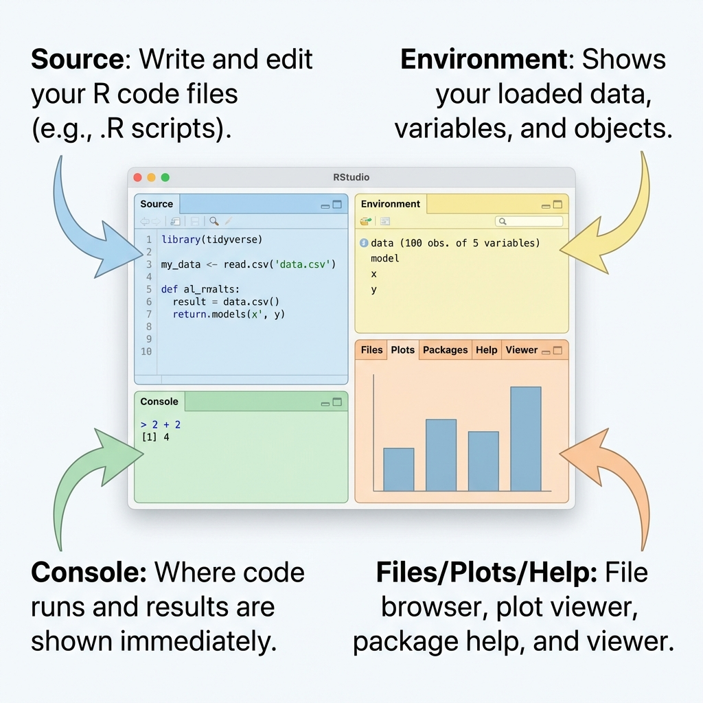
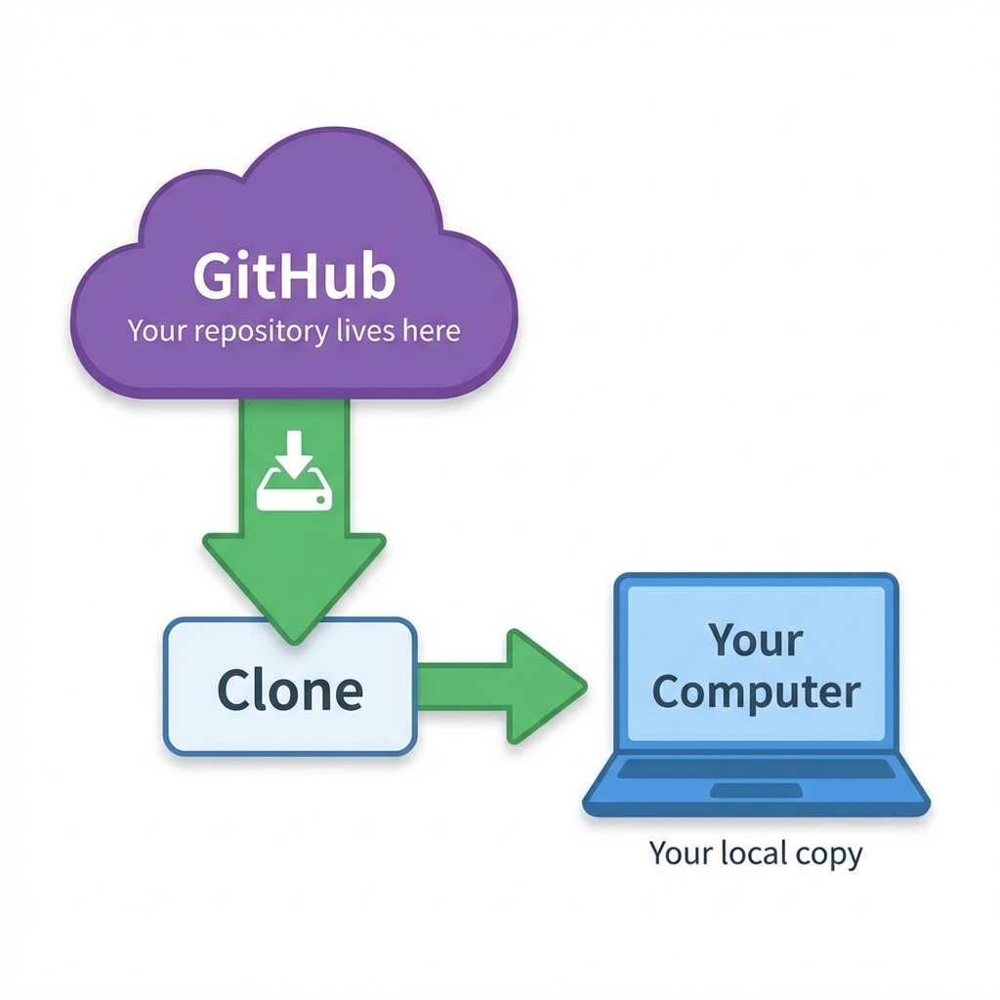

graph TD
root[MA22019]
root --> materials[materials/]
root --> practice[practice/]
root --> homework[homework/]
root --> coursework[coursework/]
style root fill:#f9f9f9,stroke:#333,stroke-width:2px
style materials fill:#e1f5fe,stroke:#0277bd
style practice fill:#e8f5e9,stroke:#2e7d32
style homework fill:#fff3e0,stroke:#ef6c00
style coursework fill:#fce4ec,stroke:#c2185b
Computer Setup Guide
Welcome! 🎉 This guide will get you up and running for the semester. Don’t worry — we’ll walk you through every step. You’ve got this!
🏁 1. START HERE: Which path are you on?
Choose your adventure:
- A) “I’m using University of Bath Computers” → Skip to Section 1A. Lucky you — everything’s pre-installed!
- B) “I’m using my own Laptop” → Start at Section 1B. A bit more work, but totally worth it!
1A. Using University of Bath Computers
Great news! R, RStudio, Quarto and and Git are already installed. The IT team has done the hard work for you! 🙌
- Just log in to a PC.
- Then jump straight to Section 2: Your Computational Toolkit.
1B. Using Your Own Laptop
Using your own machine? Brilliant — having your own setup means you can work from anywhere.
You’ll need to install four things before your first lab:
| Software | Download Link |
|---|---|
| R | cloud.r-project.org |
| RStudio | posit.co/download/rstudio-desktop |
| Quarto | quarto.org/docs/get-started/ |
| Git | git-scm.com/downloads |
Just choose your operating system and download the installer. The installation wizards will guide you through — accept the defaults and you’ll be fine!
2. Your Computational Toolkit
Let’s meet the tools you’ll be using this semester. Don’t worry if they sound unfamiliar — by Week 2, they’ll feel like old friends!
| Tool | What It Is | Think of It Like… |
|---|---|---|
| R | The programming language for data analysis | The language you speak (like English) |
| RStudio | The software where you write R code | Your word processor (like Microsoft Word) |
| Quarto | Creates documents with code AND text | A Word doc that can actually run code! |
| Git | Version control (tracks all your changes) | “Track Changes” on steroids 💪 |
| GitHub | Cloud storage for your Git projects | Like Google Drive, but designed for code |
NoteQuick Clarification
R is the language, RStudio is the interface. You write R code inside RStudio — just like you write English inside Word!
A Quick Tour of RStudio
When you first open RStudio, don’t panic if it looks complicated! You’ll see three panes initially. The fourth one (Source) appears when you open a file.
Tip
“Where’s the fourth pane?!” The Source pane only appears when you open a file (.R, .qmd, etc.). Go to File → Open File or double-click any file in the Files pane to reveal it.

| Pane | Location | What It Does |
|---|---|---|
| Source | Top-left | Your code editor — where the magic happens! ✨ |
| Console | Bottom-left | Run code and see immediate results (look for the > prompt) |
| Environment | Top-right | Shows your data, variables, and those all-important Git buttons (when activated, see below) |
| Files/Plots/Help | Bottom-right | Browse files, admire your plots, get help when stuck |
Pro tip: If a pane goes missing (it happens!), go to View → Panes → Show All Panes to bring it back.
TipUse Source Mode, Not Visual Mode
When editing .qmd files, RStudio offers two modes: Source and Visual. We strongly recommend Source mode because:
- You see exactly what’s in the file — no mystery formatting hiding in the background
- You’ll learn Markdown syntax (a skill that transfers to blogs, READMEs, documentation, and more!)
- It’s way easier to debug when something goes wrong
- Visual mode can sometimes sneak in unwanted formatting changes
Switch modes using the toggle at the top-left of the Source pane. Trust us on this one!
Install R Packages (The “Apps”)
R is like a new phone—it’s great, but you need to install “apps” (called packages) to make it useful.
We have prepared a Master Script that installs everything you need for the semester (Tidyverse, Mapping tools, etc.).
- Open RStudio.
- Go to File > New File > R Script.
- Copy and paste the code below into the new file. (Tip: You can use the copy icon 📋 in the top-right of the code block).
- Save the file as
install_packages.Rin yourMA22019folder. - Select all the code (Cmd+A / Ctrl+A).
- Click Run (or press Cmd+Enter / Ctrl+Enter).
# MA22019: Master Package Installation Script
# Run this entire chunk to install/update course packages
install_if_missing <- function(packages) {
new_packages <- packages[!(packages %in% installed.packages()[,"Package"])]
if(length(new_packages)) {
message("Installing: ", paste(new_packages, collapse = ", "))
install.packages(new_packages)
} else {
message("✅ All packages in this group are already installed.")
}
}
# 1. Core Data Science
install_if_missing(c("tidyverse", "rmarkdown", "knitr", "lubridate"))
# 2. Visualization
install_if_missing(c("patchwork", "RColorBrewer", "scales"))
# 3. Text Analysis
install_if_missing(c("tidytext", "wordcloud", "textdata"))
# 4. Spatial Analysis
install_if_missing(c("sf", "tmap", "ggspatial", "prettymapr", "sp", "gstat", "spatstat", "raster"))
message("🎉 Setup Complete! You are ready for MA22019.")Note: This might take a few minutes. If it asks “Do you want to restart R prior to installing?”, click Yes.
Note🏫 Important
- Re-installing Packages: R packages are often stored in a temporary location (
C:/Users/.../AppData/). This folder is wiped when you log off or switch computers.- The Fix: Keep the
install_packages.Rscript handy! You may need to run it again at the start of a session if your packages are missing.
- The Fix: Keep the
- “Rtools is Missing” Warning: When running the install script, you might see a scary red warning about
Rtoolsnot being installed.- The Fix: Ignore it. Rtools is for compiling packages from source. We use pre-built binaries, so you don’t need it. As long as you see
Setup Completeat the end, you are fine!
- The Fix: Ignore it. Rtools is for compiling packages from source. We use pre-built binaries, so you don’t need it. As long as you see
Quarto: Your New Document Format
Forget Word and Google Docs — in this course, you’ll create Quarto documents (.qmd files). These are special because they combine:
- 📝 Your written analysis (in plain English)
- 💻 Your code (in R)
- 📊 The output of your code (plots, tables, results — all auto-generated!)
When you click Render, everything magically combines into a beautifully formatted HTML or PDF. It’s like having a robot assistant who formats your reports perfectly every time!
TipAlso taking MA22015 (Statistics 2B)?
Good news! In MA22015, you use R Markdown (.Rmd files) which is basically Quarto’s older sibling. They’re very similar!
| Feature | R Markdown (.Rmd) |
Quarto (.qmd) |
|---|---|---|
| Used in | MA22015 | MA22019 (this course) |
| Button to run | Knit | Render |
| File header | Uses output: html_document |
Uses format: html |
| Syntax | Nearly identical | Nearly identical |
Think of Quarto as the “next generation” upgrade. Skills transfer directly between them — you’re basically learning two tools for the price of one! 🎁
An Analogy to Writing an Essay
Still feeling a bit overwhelmed? Think of it like writing an essay for a literature class:
| Literature Class | Data Science (This Course) |
|---|---|
| Language: English | Language: R |
| Interface: Microsoft Word | Interface: RStudio |
| Document: .docx file | Document: .qmd (Quarto) file |
| Track Changes | Git |
| Google Drive | GitHub |

See? You’ve been doing a version of this your whole academic life. Now you’re just leveling up! 🚀
3. Create Your Folder Structure
Let’s get organized! All your course work will live in one tidy folder. This takes a few minutes and will save you hours of confusion later.
Where to put the MA22019 folder
| Computer Type | Location |
|---|---|
| University PC | H:\MA22019\ |
| Windows laptop | C:\Users\YourName\Documents\MA22019\ |
| Mac | ~/Documents/MA22019/ |
Warning⚠️ AVOID Cloud-Synced Folders at All Costs!
This is really important: Do NOT save your projects in OneDrive, iCloud, Dropbox, or Google Drive folders!
Why? Cloud sync services and Git are mortal enemies. Git creates thousands of tiny files that these services try to sync simultaneously, causing crashes, corruption, and heartbreak. 💔
The MA22019 folder can go anywhere that is NOT cloud-synced:
- Windows: If your Documents folder shows a cloud icon, create your folder at
C:\MA22019\instead - Mac: Go to System Settings → Apple ID → iCloud → iCloud Drive → Options. If “Desktop & Documents” is ON, use
~/MA22019/(your home folder) instead - University PCs: The H: Drive is safe — use that!
The Folder Structure
We will create three folders now (since we create the materials folder in the next step!):
MA22019/
├── install_packages.R
├── materials/ ← Created automatically in Section 5
├── practice/ ← You will clone practice labs (like Lab 00 to be created in Section 6) or use as a sandbox
├── homework/ ← You will clone homework assignments here
└── coursework/ ← You will clone coursework assignments here
The “Practice” Folder = Your Sandbox 🏖️
The practice/ folder is special.
- Official Use: It’s for Lab 00 and other non-assessed practice tasks.
- Your Use: Think of it as your Sandbox. Want to test some code from a lecture? Want to try a new package? create a script in
practice/my_experiments.Rfor example! It’s the one place where you can be messy without breaking anything important.
Important🛑 CRITICAL: Do NOT Move Folders Around!
Once you have created this structure, do not move or rename these folders.
- If you clone a repo into
practice/and then drag-and-drop it intomaterials/, Git will break. - If you rename
MA22019toMy_Maths_Notes, RStudio will get confused.
Set it up once, leave it alone, and let RStudio manage the files inside. Simplicity is key!
Note
You can create these folders using File Explorer (Windows) or Finder (Mac), or use RStudio as shown below — whatever feels comfortable!
How to create folders in RStudio (optional method):
- Open RStudio (not inside any project! Don’t know what a project is? See Section 7 below)
- In the Files pane (bottom-right), navigate to your Documents (or chosen location)
- Click New Folder → type
MA22019 - Click into
MA22019/ - Click New Folder → type
practice - Click New Folder → type
homework - Click New Folder → type
coursework - (Do not create
materialsyet — RStudio will do it for you!)
Tip🎉 That’s All the Folders You Need!
If you’re following the Git workflow (which you should!), this is the only mandated manual folder creation you’ll do all semester. When you clone homework or coursework, the folders appear automatically. Pretty neat, right?
You can jump to the Weekly Workflow Guide for details on how cloning works.
Using the H: Drive (University Network Storage)
Your H: Drive is personal network storage that IT backs up for you. It’s a safe, reliable place for your work on university computers.
On Campus (Lab PCs)
The H: Drive is automatically available — no setup needed!
- Open File Explorer (Win+E)
- Look for (H:) under “This PC”
That’s it!
Note🏫 Important
Storage Limits: Your H: Drive (“MyFiles”) is safe and persistent, but it only has 8GB of space. * Advice: Keep your active code projects on H:, but move large datasets or old projects to your OneDrive or a USB stick if you run out of space.
From Home (Personal Laptop)
Want to access your H: Drive from home without using UniDesk or UniApps? Check the official university guides:
4. Configure Git in RStudio
New to Git? Curious why we bother with version control? Check out Why Learn Git? — it’s a quick read and might change how you feel about it!
Git is the version control system that connects RStudio to GitHub. You only need to set it up once per computer — then you’re good to go!
On University Lab Computers
The good news: Git is already installed. But there is one critical step you must do to make it work with the university network drives (H: Drive).
⚠️ Critical: Fix the “Dubious Ownership” Error
To verify your setup and ensure the Git pane appears:
Open RStudio.
Click the Terminal tab (next to Console, usually bottom-left).
Copy and paste this exact command and press Enter:
git config --global --add safe.directory '*'Restart RStudio (close and reopen it).
NoteWhy do I need this?
The University H: Drive has strict security settings that confuse Git. This command tells Git “It’s safe to use folders on this computer.”
If your Git pane ever disappears in the future, just run this command again! It resets occasionally on university PCs.
Done! That was easy, right? ✅
On Personal Computers (Windows)
Do the following check:
- Open RStudio
- Go to Tools → Global Options → Git/SVN
- The Git executable should now show
C:\Program Files\Git\bin\git.exe - Click OK
High five! 🙌 You’re all set!
On Personal Computers (Mac)
Great news for Mac users — Git usually comes pre-installed! Let’s check:
- Open RStudio
- Go to Tools → Global Options → Git/SVN
- Check if the Git executable shows
/usr/bin/gitor similar
If Git isn’t found
Here’s what to do:
On Windows
- Open Command Prompt (Start menu → type
cmd) - Type
git --versionand press Enter - If it shows a version number, Git is installed! Copy the path from
where gitinto RStudio settings - If it says “not recognized”, install Git from git-scm.com
On Mac:
- Open Terminal (Applications → Utilities → Terminal)
- Type
git --versionand press Enter - If prompted, click Install to get the Xcode Command Line Tools
- Restart RStudio and check Git/SVN settings again
Warning⚠️ Heads Up: Git Does NOT Work on Remote Desktop (UniDesk/UniApps)
If you’re connecting to university computers remotely using UniDesk or UniApps, Git will not work. You can use RStudio fine, but Clone/Pull/Push operations will fail.
Your options: Use a physical lab computer on campus, or install R/RStudio/Git on your own laptop (honestly, it’s worth it!).
More info: UniDesk/UniApps guide.
Tell Git Who You Are
Almost there! Git needs to know your name and email so it can track who made which changes.
In the RStudio Console (the pane with the > prompt, usually bottom-left), run this once — just replace the example with your details:
install.packages("usethis") # Only needed once
library(usethis)
use_git_config(user.name = "Your Name", user.email = "abc123@bath.ac.uk")
WarningImportant: Use Your Bath Account Only
- Use your Bath email address (
abc123@bath.ac.uk), not your personal email - You cannot use a personal GitHub.com account for this course
- We use
github.bath.ac.uk(University of Bath’s enterprise GitHub), which is completely separate fromgithub.com - Your Bath username and password work automatically — no need to create anything new!
5. Clone the Materials Repository
Time for the exciting part! 🎬 The materials repository will eventually contain all your course content: case studies, labs, and solutions. You’ll clone it once, then pull updates weekly.

TipWhy Clone Instead of Downloading from Moodle?
You might be wondering: “Why not just download files from Moodle like in other courses?” Great question! Here’s why Git is better:
The Old Way (Moodle):
- Lecturer uploads homework to Moodle
- You log in, find the right folder, download a ZIP file
- You unzip it… somewhere on your computer
- Weeks later: “Where did I put that file?” 😩
- If the lecturer updates a file, you have to re-download everything and figure out what changed
The Git Way:
- You clone once — everything lands in the right place automatically
- When updates are available, you click Pull and only the changed files update
- Your folder structure stays organized forever
- Git tracks what changed and when — no guessing!
- Your work is automatically backed up to GitHub
Think of it like the difference between printing every email vs. using Gmail. One is clunky and creates chaos; the other just works. 📧
Here’s how to clone the materials:
- In RStudio: File → New Project → Version Control → Git
- Repository URL:
https://github.bath.ac.uk/ma22019-2026/materials.git - Project directory name: Leave as
materials(this creates the folder for you!) - Create project as subdirectory of: Browse and select your
MA22019folder - Click Create Project
RStudio will download everything and open the project automatically. Magic! ✨
Authentication (If Asked for Password)
If RStudio asks for credentials when cloning, use:
- Username: Your Bath username (e.g.,
abc123) - Password: Your university password
Note
We use github.bath.ac.uk (enterprise GitHub) which connects to your university login. You do NOT need a Personal Access Token or SSH keys for this course — keep it simple!
Verify It Worked
Take a moment to check everything looks right:
- ✅ You should see a Git tab in the top-right pane
- ✅ The Files pane should show folders like
lab_solutions/,labs/,live_coding
If you see all, give yourself a pat on the back! 🎉
Test Pull (Verify Your Setup)
One last check! Let’s make sure you can pull updates:
- In the Git pane (top-right), click the Pull button (blue down arrow ⬇️)
- You should see a message like “Already up to date” or watch files appear
- ✅ If the Git pane works and Pull runs without errors, your setup is complete!
Congratulations — you’re ready to do data science! 🚀
6. Your First Task: Practice ‘Cloning’ (Lab 00)
Now that you’ve cloned the materials, let’s practice with your personal repository for Lab 00.
- Find your repo URL:
- Go to
https://github.bath.ac.uk/ma22019-2026/lab-00-yourusername - (Replace
yourusernamewith your actual username!) - Copy the URL from your browser address bar.
- Go to
- Clone it in RStudio:
- Go to File > New Project > Version Control > Git.
- Repository URL: Paste the URL you just copied.
- Project directory name: Leave this as
lab-00-yourusername. - Create project as subdirectory of: Click Browse and navigate to
.../MA22019/practice. - Click Create Project.
- Verify:
- RStudio should open your new project.
- Look in the Files pane (bottom-right). You should see a file called
lab_00.qmd. - Click on
lab_00.qmdto open it.
🎉 Success! You have just cloned your first personal repository. This is exactly how you will start every homework and coursework.
7. RStudio Projects
When you clone or pull from the course repository, you’ll notice an unfamiliar file with a .Rproj extension. This is an RStudio Project file — think of it as a bookmark that tells RStudio “this folder is a project.”
Why Use Projects?
Projects make your life so much easier:
| Benefit | What It Means For You |
|---|---|
| Working directory | R knows where your files are — no more confusing file paths! |
| Everything together | Data, code, and output all live in one tidy place |
| Reproducible | Your code works on any computer, not just yours |
| Git integration | The Git pane appears automatically when you need it |
How to Open a Project
When you want to work on a specific lab or homework:
- Navigate to the project folder in File Explorer/Finder
- Double-click the
.Rprojfile - RStudio opens with that project loaded — you’re ready to code!
You’ll Have Multiple .Rproj Files
As the semester progresses, your MA22019 folder will fill up with .Rproj files — one for each activity:
MA22019/
├── materials/
│ ├── materials.Rproj ← For pulling course content
│ ├── labs/
│ │ ├── lab_01.Rproj
│ │ └── lab_02.Rproj
│ ├── lab_solutions/
│ │ └── lab_01_sols.Rproj
│ └── live_coding/
│ └── live_coding_01.Rproj
├── practice/
│ └── lab-00-yourusername/
│ └── lab-00.Rproj ← Practice Lab 00
├── homework/
│ ├── hw-01-yourusername/
│ │ └── hw_01.Rproj ← Homework 1
│ └── hw-02-yourusername/
│ └── hw_02.Rproj ← Homework 2
└── coursework/
│ └── cw-01-yourusername/
│ └── cw_01.Rproj ← Coursework 1This is totally normal! Each .Rproj file keeps that assignment’s work separate and organized. Just remember: open one project at a time — don’t try to juggle multiple!
Golden Rule: Always work inside a project! If you don’t see a
.Rprojfile in your Files pane, you’re probably not in one.
8. Quick Reference Card
Already finished setup? Bookmark this section! For detailed step-by-step instructions, see the Weekly Workflow Guide.
| Task | How |
|---|---|
| Open Project | Double-click the .Rproj file |
| Pull Updates | Git pane → Pull (⬇️ blue arrow) |
| Start New Guide/Homework | File → New Project → Version Control → Git |
| Render Report | Source pane → Render (🚀 blue arrow) |
| Save Your Work (Commit) | Git pane → Check boxes → Commit |
| Submit Your Work (Push) | Git pane → Push (⬆️ green arrow) |
| Install Packages | Open install_packages.R → Select All → Run |
9. Next Steps
You made it! 🎉 Here’s what to do next:
- 📖 Read the Weekly Workflow Guide to understand what you’ll do each week
- 🔧 If something goes wrong (it happens to everyone!), check the Troubleshooting Guide
Now go forth and wrangle some data! 📊